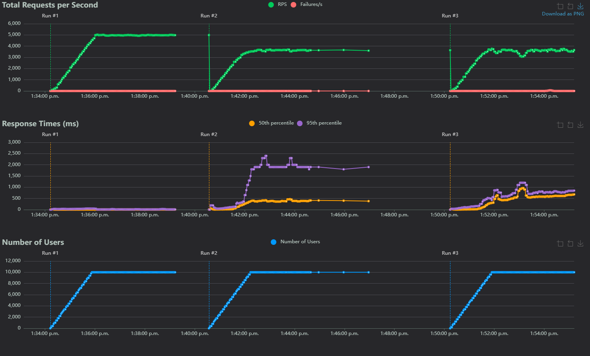

Http-basics
HTTP basics
This test is just designed to compare a very basic HTTP server from each language. Specifically the stack for each language is:
- Go: The
net/httpstandard library- https://pkg.go.dev/net/http
- Java: The
com.sun.net.httpserver"standard" library- https://docs.oracle.com/javase/8/docs/jre/api/net/httpserver/spec/com/sun/net/httpserver/package-summary.html
- Python: FastAPI + uvicorn
- The default http package in python does not support multithreading, making it unfair to use in this example
Methodology
All tests were run using:
- locust (version 2.32.1) to generate load and graphs
- Ran using
locust --processes -1to use all available threads - Settings used
- Direct IP connection (i.e.
http://192.168.1.1:<port>) - Number of users 10,000
- Users/sec 100
- Time 5 mins
- Tasks
- A single GET request per user to
/
- A single GET request per user to
- Ran using
- Load generated on a separate machine
- Connected via an ethernet 2.5Gbps connection
- 16 cores, 32 threads
- 32GB RAM
Results
Some warnings before reading the results and methodology:
- This test did not last long enough for lengthy GC's to cause problems
- 10k concurrent users is largely unreasonable
- 100 users/sec is also unreasonable, and gives little chance for servers to adapt to load
- Closer to a DDOS than a typical usage pattern
- The task itself is incredibly simplistic, and is not reasonable (no DB calls, no template parsing, etc.)

*Run 1 is go, run 2 is Java, and run 3 is python
Under Load:
| Language | Response times (ms) 50th Percentile | Response times (ms) 95th Percentile | Requests per second | Number of users | Link | Source |
|---|---|---|---|---|---|---|
| Go | 6 | 20 | ~4980 | 10,000 | Link | Link |
| Python | 500 | 680 | ~3650 | 10,000 | Link | Link |
| Java | 465 | 2350 | ~3550 | 10,000 | Link | Link |
*Response times calculated as where rtmax is the maximum response time under full 10k load, and rtmin is the minimum check links in table for more granular details
Takeaways
- Go is by far the most performant for this test
- In particular the response time is 100x lower on the 50th percentile, which is quite significant
- Generally Go was able to handle everything, there was 1 spike in response time around ~8k users, but isn't consistent across the tests
- Python ran much better than I thought
- There is a bunch of optimizations I can run without making changes (like pypy, or optimization mode)
- The response times steadily climbed with python, likely because of background running GC's, if it was left longer we would start to see the top end of that latency
- Much easier to work with than java
- Java was dissapointing
- It started showing first signs of struggling around 9k, but the 95th percentile results are rough compared to python
- This means your users could be waiting up to 3 seconds before a response is sent, and this is a best case scenario because there isn't even any processing being done
- I personally find java a pain to work with, I typically "put up" with it, because I've been told it has better performance characteristics, I'm not so sure of that anymore
- It started showing first signs of struggling around 9k, but the 95th percentile results are rough compared to python